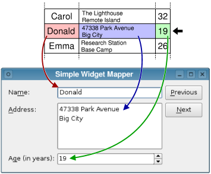

Creating Data-Aware Forms
Using the SQL models described above, the contents of a database can be presented to other model/view components. For some applications, it is sufficient to present this data using a standard item view, such as QTableView. However, users of record-based applications often require a form-based user interface in which data from a specific row or column in a database table is used to populate editor widgets on a form.
Such data-aware forms can be created with the QDataWidgetMapper class, a generic model/view component that is used to map data from a model to specific widgets in a user interface.
QDataWidgetMapper operates on a specific database table, mapping items in the table on a row-by-row or column-by-column basis. As a result, using QDataWidgetMapper with a SQL model is as simple as using it with any other table model.

The Books example shows how information can be presented for easy access by using QDataWidgetMapper and a set of simple input widgets.